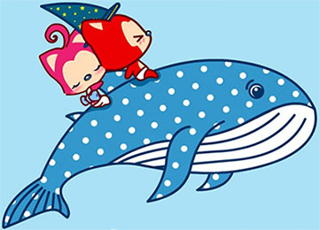
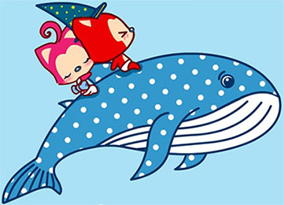

杨同学 ❤ 小王 一生一世
按键盘 "↓" 看看小杨怎么说吧
毕业后，他只知道工作上班、每天两点一线家、公司

一个人去海边吹吹风

一个人去爬爬山、跑跑步

一个人的地铁、上车、挤、下车

一个人的游乐场

但是生活还得继续、赚钱还是很不错的、他依旧还是开开心心

生活难免有风风雨雨

工作上的不如意、生活上的孤孤单单

被大部分琐碎的小事烦扰

虽然生活不会总是一帆风顺

但他每次都能勇敢的面对
随时准备接受生活的挑战


小杨等的她
在镜子里面吗？等待着

一个人走在海边，看到太多太多成双成对的
大海可能听到了他的呼唤

于是，小杨一个人继续向前走
走在茫茫的雪地上

直到2021年初小杨和小王互相加了好友、聊着过往

在3月25号，他们在一起了，小杨喜欢小王，非常非常的喜欢，因为小王的出现，小杨脸上有了更加灿烂的笑容

爱情中不全是甜蜜、也会有争吵、眼泪


可是那又怎样呢、包容彼此、互相理解彼此、所爱隔山海、山海亦可平

还记得第一次见面的害羞嘛、我穿着糟糕的衣服、背着脏脏的书包
之后、看了属于我们的第一场电影-盛夏未来、有了属于我们的第一次约会

再往后、我们去了解放碑、洪崖洞、漫步千厮门大桥

时间过的真的很快、到了22年、还记得22年初、你只身一人来到深圳、陪我

那几天、真的好开心好开心、就连失业都被抛之脑后
下班能见到宝贝、会来车站接我

之后、我们去了深圳湾、吹了吹深圳湾的海风

隔岸看到了灯火通明的香港

吃了公司附近的武汉热干面

吃了味道还不错的东北菜

年后、我到了广州、你也选择到了离我更近的东莞上班、呜呜呜、超感动

很快你也要毕业了、在毕业前几个月、一个人来到了广州陪我

我们一起看电影、一起躺、一起做饭、一起逛街

那时候，感觉一切都是值得的

虽然有甜蜜的时光、也有很多吵闹、矛盾、临到你要回学校了我们都还在吵架
那天的机场、我久久不能释怀
慢慢知道
那个有小王在的地方、小杨才是高兴的、幸福的

虽然在将来他们可能偶尔还是会吵架

但是相信他她都能包容彼此


爱护彼此、做彼此心灵的天使
如果没有小王在身边，窗外就没有风景、失去了颜色

如果没有小王在身后


小杨又怎会飞的更高更远、走的更远呢
23年因为去不去的问题也吵了一个打架、哎、想想还是做的很不对
这两年来、小杨也有很多做的不对的地方、他的脾气就是很犟、像个女孩子有时候、很对不起她
但是、他相信、他会一步步改善、改变


杨同学愿意一直陪伴着小王
爱情就像花草一样
需要用包容来浇灌

小杨也不是一个懂浪漫的人
嘴巴也不是很甜


但是和小王在一起 真的很开心、哪怕是简单做顿饭、 一起吃外卖、螺狮粉、自己动手的火锅 他都很开心、很幸福

想想未来他们 会有一辈子 杨同学好开心 小杨可以和小王一起 去全世界好多地方玩
杨同学也会继续努力
为了他和小王的梦之城堡

小杨同学很幸福，因为他遇到了王同学。他相信后面的每天都会是快乐的
简简单单，开心和小王在一起的每一个刻

小杨想和小王一起过幸福的生活
 

永远有多远？
比时间多一秒就是永远，我会永远爱你
世界有多大？
你走到哪里，世界就有多大
以后、他会更加努力、给小王一个温暖的家


我爱你
I love you

我相信，小杨和小王的故事会一直继续下去。
无论精彩、平淡都会是他们喜欢的。
王佳玲，我爱你
-- 按“Esc"键有惊喜